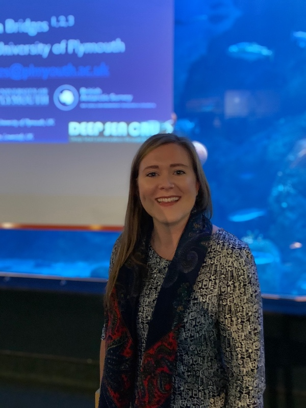

Curriculum Vitae
Amelia E.H. Bridges, Postdoctoral Benthic Ecologist and National Geographic Explorer
amelia.bridges@plymouth.ac.uk or ameliabridges@hotmail.co.uk
Contact Details
- Email: amelia.bridges@plymouth.ac.uk or ameliabridges@hotmail.co.uk
- Tel: (+44)7926 091 345
Qualifications
PhD Marine Ecology September 2017 – December 2021
- Marine Biology and Ecology Research Centre (MBERC), University of Plymouth, UK
- Thesis: Ecological Studies of the South Atlantic Deep Sea to Inform Sustainable Management
BSc (Hons) Marine Biology & Oceanography September 2014 – June 2017
- School of Biological and Marine Sciences, University of Plymouth, UK
- Award: First Class with Honours
- Thesis: The effect of Pheronema carpenteri (Thomson, 1869) sponge aggregations on the species richness and community composition of the deep sea.
Professional Experience
Research Fellow November 2022 to date
- Marine Biology and Ecology Research Centre (MBERC), University of Plymouth, UK
Postdoctoral Research Associate September 2021 to October 2022
- Marine Biology and Ecology Research Centre (MBERC), University of Plymouth, UK
Freelance Marine Consultant December 2021 to date
- AEH Bridges Consultancy, Plymouth, UK
Research: Skills, Interest & Goals
Key Skills:
- Broad- and fine-scale habitat mapping
- Habitat suitability modelling
- Image and video analysis using BIIGLE 2.0 and other annotation softwares
- Advanced statistical analysis skills using R and Primer
- High-level ability to manipulate spatial data using GIS softwares (including ESRI ArcMap)
- Experience working on a Linux-based High Performance Computing system to undertake spatial and statistical analysis
Publications:
Graves, K.P., Bridges, A.E., Dabrowski, T., Furey, T., Lyons, K., Howell, K.L. 2022. Oceanographic variability drives the distribution but not the density of the aggregation forming deep-sea sponge Pheronema carpenteri. Deep Sea Research Part I: Oceanographic Research Papers. DOI:10.1016/j.dsr.2022.103917
Howell, K.L., Bridges, A.E., Graves, K.P., Allcock, L., la Bianca, G., Ventura-Costa, C., Donaldson, S.E., Downie, A., Furey, T., McGrath, F., Ross, R.E. 2022. Performance of deep-sea habitat suitability models assessed using independent data, and implications for use in area-based management. Marine Environmental Progress Series. DOI: 10.3354/meps14098
Bridges, A.E., Barnes, D.K.A., Bell, J.B., Ross, R.E., Howell, K.L. 2022. Depth and latitudinal gradients of diversity in seamount benthic communities. Journal of Biogeography, 49(5), 904-915 DOI: 10.1111/jbi.14355
Bridges, A.E., Barnes, D.K.A., Bell, J.B., Ross, R.E., Howell, K.L. 2021. Benthic community composition of South Atlantic seamounts. Frontiers in Marine Science, 8, pp.1530. DOI: 10.3389/fmars.2021.660648
Barnes, D.K.A., Bell, J.N., Bridges, A.E., Ireland, L., Howell, K.L., Martin, S.M., Sands, C.J., Mora Soto, A., Souster, T., Flint, G., Morley, S. 2021. Climate mitigation through biological conservation; extensive and valuable blue carbon natural capital in Tristan da Cunha’s giant Marine Protected Area. Biology, 10, 1339. DOI: 10.3390/biology10121339
Bell, J.B., Laptikhovsky, V., Barnes, D.K., Benedet, R., Bridges, A.E., Glass, J., Glass, W., Green, R., Morley, S.A., Robertson, S. and Robson, G.R., 2021. Life history and ecology of bluenose warehou (Hyperoglyphe antarctica, Centrolophidae) in the southern Atlantic. Frontiers in Marine Science, 8, pp.41. DOI: 10.3389/fmars.2021.610172
Funding & Awards:
- Enhancing Research Culture Bridging Award (£11,151)
- Awardee of the National Geographic Early Career Research Grant 2018 ($6,500)
- Marine Biological Association Student Travel Grant 2018 (£100)
- British Ecological Society Training and Travel Grant 2018 (£500)
- Awardee of the National Geographic Support for Women Grant 2019 ($2,400)
- Marine Biological Association Prize for Outstanding Performance in a Marine Biology Undergraduate Course 2017
Presentations, Posters, Training & Workshops:
2022
- Oral presentation: Challenger 150: The Challenger Society Conference 2022, Natural History Museum, London, UK, “Review of the Central & South Atlantic Deep-Sea Benthos: Science, Policy & Management”
2021
- Invited expert: online: South East Atlantic Fisheries Organisation Annual Scientific Committee Meeting “Filling the data gaps: transferring models from data-rich to data-poor deep-sea areas to support spatial management”
- Invited panelist: online: Deep Ocean Observing Strategies for a Predicted Ocean
- Invited presentation: online: Challenger 150 Predicted Ocean Satellite Event: Developing deep-sea ecosystem models, “Habitat Suitability Modelling”
- Oral presentation: online: The 16th Deep-Sea Biology Symposium, Brest, France, “Filling the data gaps: transferring models from data-rich to data-poor deep-sea areas to support spatial management”
2020
- Oral presentation: online: eDSBS 2020 Conference, “Depth and latitudinal gradients of diversity in seamount benthic communities of the South Atlantic”
- Oral presentation: online: One Ocean Hub Mini Symposium, “Current work in the South Atlantic”
- Public talk: St Helena Nature Conservation Group Talk, St Helena, “Mapping the deep: conserving Earth’s largest ecosystem”
2019
- Public talk: ‘Pints, Pies & PhDs’, Plymouth, UK, “Mapping the Deep… there be dragons?”
- Training: Marxan & MarZone Training, University of Victoria, British Colombia, Canada
- Oral presentation: Towards a Tristan da Cunha Marine Protection Strategy Meeting, Cambridge, UK, “Habitat suitability mapping & modelling of Vulnerable Marine Ecosystems around Tristan da Cunha”
- Oral presentation: Cefas Student Conference, Exeter, UK, “Defining benthic assemblages of conservation interest in South Atlantic UK Overseas Territories”
- Oral presentation: Plymouth Marine Science & Education Foundation Conference, Plymouth, UK, “Defining benthic assemblages of conservation interest (VMEs) in South Atlantic UK Overseas Territories”
- Oral presentation: Marine Biology & Ecology Research Centre Seminar, Plymouth, UK “Using predictive habitat modelling to assess the extent and distribution of vulnerable marine ecosystems in the South Atlantic deep-sea”
2018
- Invited seminar: JNCC Seminar Series, Peterborough, UK, “Defining benthic assemblages of conservation interest (VMEs) in South Atlantic UK Overseas Territories”
- Oral presentation: The 15th Deep-Sea Biology Symposium, Monterey Bay, USA, “Defining benthic assemblages of conservation interest (VMEs) in South Atlantic UK Overseas Territories”
- Poster presentation: The 15th Marine Biological Association Conference, University of Plymouth, UK, “Vulnerable Marine Ecosystems in the South Atlantic Deep Sea”
- Training: FEPS/OBIS/OTGA/SEF Training Course: Marine Species Distribution Modelling, Ostend, Belgium
- Training: NERC Future of Our Seas Education & Outreach Training, Plymouth, UK
